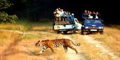
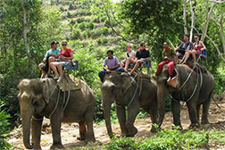

1.Corbett Nation tour
Offering a perfect mélange of nature meeting the wildlife, the Corbett-Nainital Tour
is ideal for those seeking respite from the mundane life.
Corbett National Park, sprawling over two districts in Uttarakhand makes one of the finest places for wildlife holidays in..

2.Dhikala tour
Your trip to Corbett National Park is incomplete if you have not been to the Dhikala Forest Lodge.
The beautiful lodge, located amid the vast and dense jungle of Corbett Park is only 30 kilometers from Dhangadi Gate.
It enfolds the..
3.Elephant safari tour
Are you an adventure seeker? Do you want to experience the thrilling jungle safari?
How about an exclusive elephant safari in the mysterious thick forests, deep valleys, and the rugged trails of Corbett National Park? Well, the idea is great! The..

4.CorbettNational park
Who says wild is not beautiful? Does the sight of elephant not excite you or the birds chitter do not make you look in wonder?
Yes it does! And we cannot run away from the fact that how fearful is the..